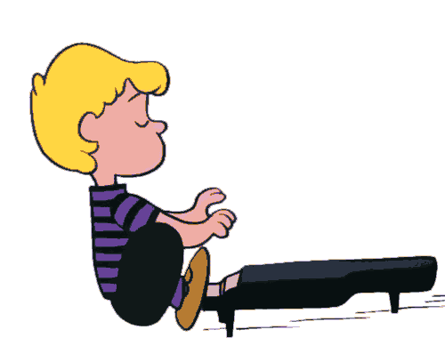

Welcome! This site was made to further your knowledge on various topics of the classical piano. The piano has existed for more then 300 years and has served as one of the most fundamental and popular instruments of the classical world. Together we will get to understand the origin and history of the piano. I will introduce you to the various instruments that preceded the piano in order for the grand piano itself to be created. Next, I'll go over some of the key classical styles of classical music starting from the creation of the piano to modern times. After that, I'll share some of my personal favorite classical pieces that include the piano. I hope you find this site enlightening and pleasing to your ears. I started to play the piano since I was four so classical music has always been a top favorite music genre for me. I truly believe that the piano has one of the most beautiful sounds of all classical instruments and I hope you will think so too after experiencing some of these heartwarming pieces.
